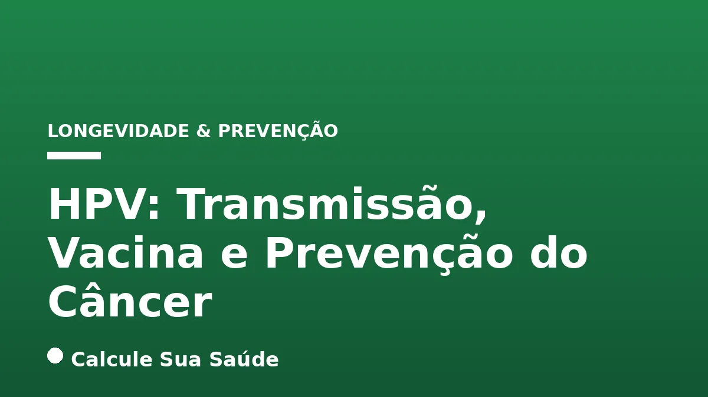

Aviso médico importante
Este conteúdo é educativo e informativo e não substitui a consulta, o diagnóstico ou o tratamento de um profissional de saúde. Em caso de sintomas, procure orientação médica.
Índice do Artigo
- 1. O Papilomavírus Humano (HPV): Uma Visão Geral
- 2. Classificação do HPV: Tipos de Baixo e Alto Risco
- 3. Mecanismos de Transmissão do HPV
- 4. Fatores de Risco para Infecção e Progressão da Doença
- 5. Manifestações Clínicas e a Natureza Assintomática do HPV
- 6. Diagnóstico do HPV: Métodos e Importância
- 7. A Vacinação contra o HPV: Pilar da Prevenção Primária
- 8. Tipos de Vacinas e Cobertura no Programa Nacional de Imunizações (PNI)
- 9. Segurança da Vacina contra o HPV: Evidências Científicas
- 10. Rastreamento do Câncer do Colo do Útero: Prevenção Secundária
- 11. Abordagens Terapêuticas para Lesões por HPV
- 12. Desmistificando o HPV: Mitos Comuns e Fatos Científicos
- 13. O Panorama Epidemiológico do HPV no Brasil
- 14. A Importância da Conscientização e Educação na Luta contra o HPV
- 15. Perguntas frequentes
O Papilomavírus Humano (HPV) representa uma das infecções sexualmente transmissíveis (ISTs) mais prevalentes em escala global, afetando a vasta maioria das pessoas sexualmente ativas em algum momento de suas vidas. Embora a menção ao HPV possa gerar preocupação, é fundamental compreender que, para a maioria, a infecção é assintomática e transitória. No entanto, certos tipos do vírus podem levar ao desenvolvimento de verrugas genitais e, mais gravemente, a diversos tipos de câncer, como o de colo do útero, ânus, pênis e orofaringe.
Neste artigo aprofundado, o portal Calcule Sua Saúde se dedica a desvendar os aspectos cruciais do HPV, desde seus mecanismos de transmissão e fatores de risco até as estratégias mais eficazes de prevenção e tratamento das lesões associadas. Com base em evidências científicas robustas, exploraremos a importância vital da vacinação contra o HPV e o papel indispensável do rastreamento na detecção precoce de lesões pré-cancerígenas.
Nosso objetivo é fornecer informações claras, precisas e atualizadas, capacitando você a tomar decisões informadas sobre sua saúde e a de seus entes queridos. A prevenção e o conhecimento são as ferramentas mais poderosas contra o HPV e suas consequências, e este guia serve como um recurso confiável para navegar por este tema complexo e essencial.
Em resumo
- O HPV é a infecção sexualmente transmissível (IST) mais comum no mundo, com mais de 200 tipos de vírus.
- Existem tipos de HPV de baixo risco, que causam verrugas genitais, e de alto risco (oncogênicos), que podem levar ao câncer.
- A transmissão do HPV ocorre principalmente por contato direto com a pele ou mucosa infectada, geralmente pela via sexual, e não por objetos ou ambientes.
- A vacinação contra o HPV é altamente eficaz e segura, prevenindo mais de 90% dos cânceres causados pelo vírus, especialmente quando administrada antes da exposição.
- O rastreamento regular, por meio do Papanicolau e do teste de DNA-HPV, é crucial para detectar lesões pré-cancerígenas e prevenir o câncer do colo do útero.
- Não há cura para a infecção pelo vírus HPV em si, mas as lesões causadas por ele podem ser tratadas com sucesso.
1. O Papilomavírus Humano (HPV): Uma Visão Geral
O Papilomavírus Humano (HPV) é um grupo diversificado de mais de 200 vírus que podem infectar a pele e as mucosas. É, de fato, a infecção sexualmente transmissível (IST) mais comum em nível global, com estimativas indicando que quase todas as pessoas sexualmente ativas serão expostas ao HPV em algum momento de suas vidas. Essa ubiquidade ressalta a importância de uma compreensão aprofundada sobre o vírus e suas implicações para a saúde pública.
A maioria das infecções por HPV é transitória e assintomática, resolvendo-se espontaneamente graças à resposta imunológica do organismo. Contudo, a persistência de certos tipos de HPV pode levar a manifestações clínicas, que variam desde lesões benignas, como verrugas, até o desenvolvimento de lesões pré-cancerígenas e, eventualmente, câncer. A capacidade do HPV de induzir a transformação maligna de células é o que o torna um agente patogênico de grande relevância clínica e epidemiológica.
2. Classificação do HPV: Tipos de Baixo e Alto Risco
Os mais de 200 tipos de HPV são categorizados principalmente em dois grupos com base em seu potencial oncogênico, ou seja, a capacidade de causar câncer:
HPV de Baixo Risco
Estes tipos de HPV são responsáveis por causar verrugas anogenitais, também conhecidas como condilomas acuminados ou, popularmente, como “crista de galo”. Embora as verrugas possam ser incômodas e esteticamente desagradáveis, elas são consideradas lesões benignas e não progridem para câncer. Os tipos 6 e 11 são os mais comuns neste grupo, sendo responsáveis por aproximadamente 90% das verrugas genitais.
HPV de Alto Risco (Oncogênicos)
Este grupo é de maior preocupação devido ao seu potencial de causar infecções persistentes que podem levar ao desenvolvimento de lesões pré-cancerígenas e, se não tratadas, progredir para câncer. Existem pelo menos 12 tipos de HPV considerados oncogênicos, com os tipos 16 e 18 sendo os mais perigosos. Juntos, eles são responsáveis por cerca de 70% dos casos de câncer do colo do útero em todo o mundo. Quando outros tipos como 31, 33, 45, 52 e 58 são incluídos, esses sete tipos respondem por 90% dos casos de câncer cervical.
Além do câncer do colo do útero, os tipos de HPV de alto risco também estão associados a outros cânceres, incluindo os de ânus, pênis, vulva, vagina e orofaringe (garganta, base da língua e amígdalas).
| Tipo de HPV | Potencial Oncogênico | Manifestações Comuns |
|---|---|---|
| 6, 11 | Baixo Risco | Verrugas anogenitais (condilomas acuminados) |
| 16, 18 | Alto Risco | Câncer do colo do útero (70% dos casos), ânus, pênis, vulva, vagina, orofaringe |
| 31, 33, 35, 39, 45, 51, 52, 56, 58, 59 | Alto Risco | Câncer do colo do útero (junto com 16 e 18, totalizam 90% dos casos), outros cânceres anogenitais e orofaríngeos |
3. Mecanismos de Transmissão do HPV
A transmissão do HPV ocorre predominantemente por contato direto com a pele ou mucosa infectada. A via sexual é a forma mais comum de contágio, abrangendo diversas modalidades de contato íntimo:
- Contato oral-genital: Relações sexuais orais.
- Contato genital-genital: Relações sexuais vaginais ou anais.
- Contato manual-genital: Contato das mãos com as genitais.
É crucial entender que a transmissão pode ocorrer mesmo na ausência de penetração vaginal ou anal, bastando o contato pele a pele ou mucosa a mucosa entre as regiões genitais. O vírus pode estar presente em áreas não cobertas pelo preservativo, o que explica por que a camisinha, embora essencial para a prevenção de outras ISTs, não oferece proteção completa contra o HPV.
Além da transmissão sexual, pode haver a transmissão vertical, da mãe para o bebê, durante o parto. Esta forma de contágio é menos comum, mas pode resultar em condições como a papilomatose respiratória recorrente (PRR) na criança.
Mitos sobre a Transmissão
É importante desmistificar algumas crenças populares. Não há comprovação científica de que o HPV seja transmitido por meio de objetos, como vasos sanitários, piscinas, toalhas ou roupas íntimas. A transmissão requer um contato íntimo e prolongado da pele ou mucosa, o que torna a contaminação por superfícies inanimadas altamente improvável.
4. Fatores de Risco para Infecção e Progressão da Doença
A infecção pelo HPV é extremamente comum entre pessoas sexualmente ativas. No entanto, certos fatores podem aumentar o risco de adquirir o vírus e, uma vez infectado, de a infecção persistir e progredir para lesões mais graves, incluindo o câncer.
Fatores que Aumentam o Risco de Adquirir o HPV:
- Início precoce da vida sexual: A imaturidade do epitélio cervical em adolescentes pode torná-las mais suscetíveis.
- Múltiplos parceiros sexuais ao longo da vida: Quanto maior o número de parceiros, maior a probabilidade de exposição.
- Parceiro(a) com múltiplos parceiros(as) sexuais: Aumenta indiretamente o risco de exposição.
- Relações sexuais sem preservativo: Embora não ofereça proteção total, o preservativo reduz significativamente o risco de transmissão.
- Histórico prévio de outras infecções sexualmente transmissíveis (ISTs): Pode indicar maior vulnerabilidade ou práticas de risco.
- Não ter sido vacinado contra o HPV: A vacina é a principal ferramenta de prevenção.
- Idade mais jovem: Devido à maior exposição ao vírus e, em mulheres, à maior imaturidade do colo do útero.
- Tricotomia genital frequente (raspagem): Pode causar microtraumas na pele, facilitando a entrada do vírus.
Fatores que Aumentam o Risco de Persistência da Infecção e Progressão para Câncer:
- Tabagismo: Fumar é um fator de risco bem estabelecido para a progressão de lesões por HPV para câncer, especialmente o de colo do útero.
- Infecção pelo HIV ou outras condições de imunossupressão: Pacientes com HIV/Aids, transplantados ou em tratamento oncológico têm um sistema imunológico enfraquecido, o que dificulta a eliminação do vírus e aumenta o risco de persistência e progressão.
- Uso prolongado de anticoncepcionais hormonais: Alguns estudos sugerem uma associação, embora o mecanismo exato não seja totalmente compreendido e o benefício da contracepção geralmente supere esse risco potencial.
- Persistência da infecção por tipos de HPV de alto risco: A infecção prolongada pelos tipos oncogênicos é o principal fator para o desenvolvimento de câncer.
- Alterações da microbiota vaginal: Condições como a vaginose bacteriana podem influenciar a resposta imunológica local e favorecer a persistência viral.
5. Manifestações Clínicas e a Natureza Assintomática do HPV
Uma das características mais importantes do HPV é que a maioria das infecções é assintomática ou inaparente. Isso significa que a pessoa pode estar infectada pelo vírus sem apresentar qualquer sinal ou sintoma visível, e muitas vezes, a infecção regride espontaneamente sem que a pessoa sequer saiba que a teve. Essa natureza silenciosa do vírus é um dos motivos pelos quais ele se espalha tão facilmente.
Quando as manifestações clínicas ocorrem, elas podem levar um tempo considerável para aparecer. As primeiras manifestações, como as verrugas genitais, podem surgir entre 2 e 8 meses após o contato com o vírus. No entanto, em alguns casos, pode levar até 20 anos para que algum sinal da infecção se torne visível, especialmente no caso de lesões pré-cancerígenas ou câncer.
Verrugas Genitais (Condilomas Acuminados)
As verrugas genitais são a manifestação mais comum da infecção por HPV de baixo risco. Elas podem aparecer em diversas regiões, como vulva, vagina, colo do útero, pênis, bolsa escrotal, ânus, períneo, boca e garganta. Geralmente, são lesões pequenas, elevadas, com aspecto de couve-flor, e podem ser únicas ou múltiplas. Na maioria dos casos, as verrugas são assintomáticas, mas algumas pessoas podem sentir coceira, sensibilidade, irritação ou, raramente, sangramento no local.
É fundamental ressaltar que a presença de verrugas genitais não significa necessariamente que a pessoa desenvolverá câncer. Como mencionado, as verrugas são tipicamente causadas por tipos de HPV não oncogênicos (como os tipos 6 e 11). No entanto, sua presença indica uma infecção por HPV e a necessidade de avaliação médica para confirmar o diagnóstico e excluir a presença de outros tipos de lesões.
6. Diagnóstico do HPV: Métodos e Importância
O diagnóstico do HPV e das lesões por ele causadas é multifacetado, envolvendo exames clínicos e laboratoriais que variam de acordo com a presença e o tipo de manifestação (clínica ou subclínica).
Exame Clínico
Para lesões visíveis, como as verrugas genitais, o diagnóstico pode ser feito por um profissional de saúde através da simples observação. A morfologia e a localização das verrugas são características que auxiliam no reconhecimento.
Teste com Solução de Ácido Acético
Este teste é utilizado para auxiliar na visualização de lesões subclínicas (não visíveis a olho nu). Uma solução de ácido acético (vinagre) é aplicada nas áreas genitais ou mucosas suspeitas. Se houver lesões por HPV, as células infectadas reagem ao ácido e se tornam esbranquiçadas, facilitando sua identificação.
Papanicolau (Exame Citopatológico)
O Papanicolau é o exame ginecológico preventivo mais conhecido e amplamente utilizado para o rastreamento do câncer do colo do útero e suas lesões precursoras. Ele consiste na coleta de células do colo do útero para análise microscópica. O objetivo principal do Papanicolau não é diagnosticar a presença do vírus HPV em si, mas sim identificar alterações nas células que possam indicar lesões pré-cancerígenas ou câncer. É uma ferramenta vital para a prevenção do câncer de mama e de outros tipos de câncer.
Teste de DNA-HPV
Este teste molecular é mais específico e identifica diretamente a presença do DNA dos tipos de HPV associados a cânceres genitais, especialmente os de alto risco (oncogênicos). É uma ferramenta poderosa para o rastreamento, pois pode detectar o vírus antes mesmo que as alterações celulares se tornem visíveis ao Papanicolau. No Brasil, o Ministério da Saúde incorporou em 2024 o teste molecular para detecção de HPV oncogênico como forma de rastreamento primário do câncer de colo do útero para mulheres a partir dos 30 anos, substituindo o Papanicolau para esta finalidade, que passará a ser usado para confirmação de casos positivos. Este avanço representa um passo significativo na prevenção e controle do câncer cervical no país, alinhando-se às diretrizes internacionais para rastreamento do câncer colorretal e outras neoplasias.
7. A Vacinação contra o HPV: Pilar da Prevenção Primária
A vacinação contra o HPV representa a estratégia mais eficaz e fundamental na prevenção primária das infecções pelo vírus e, consequentemente, dos cânceres e outras doenças a ele relacionadas. A ciência tem demonstrado consistentemente a alta eficácia e segurança dessas vacinas, tornando-as um pilar essencial da saúde pública.
Duas revisões sistemáticas da Cochrane, publicadas em novembro de 2025, forneceram evidências fortes e consistentes de que as vacinas contra o HPV são altamente eficazes na prevenção do câncer do colo do útero e de alterações pré-cancerosas. Os estudos indicam que meninas vacinadas antes dos 16 anos foram 80% menos propensas a desenvolver câncer do colo do útero. A vacinação tem o potencial de prevenir mais de 90% dos cânceres causados pelo HPV, o que a torna uma das intervenções de saúde mais impactantes da medicina moderna.
A vacina atua estimulando o sistema imunológico a produzir anticorpos contra os tipos de HPV mais comuns e perigosos. Ao ser administrada antes da exposição ao vírus, ou seja, antes do início da vida sexual, a vacina confere a máxima proteção. Mesmo para aqueles que já iniciaram a vida sexual, a vacinação ainda pode oferecer benefícios, protegendo contra os tipos de HPV aos quais a pessoa ainda não foi exposta.
É importante ressaltar que a vacina contra o HPV não é um tratamento para infecções já existentes ou lesões causadas pelo vírus. Seu papel é preventivo. Portanto, a vacinação deve ser vista como uma medida proativa de proteção da saúde, complementando outras estratégias de prevenção, como o uso de preservativos e o rastreamento regular.
8. Tipos de Vacinas e Cobertura no Programa Nacional de Imunizações (PNI)
Atualmente, existem diferentes tipos de vacinas contra o HPV, que variam na quantidade de tipos virais contra os quais oferecem proteção:
- Vacinas Bivalentes: Protegem contra os tipos de HPV 16 e 18, responsáveis pela maioria dos cânceres relacionados ao vírus.
- Vacinas Quadrivalentes: Protegem contra os tipos de HPV 6, 11 (causadores de verrugas genitais) e 16, 18 (oncogênicos).
- Vacinas Nonavalentes: Oferecem a proteção mais ampla, abrangendo os tipos 6, 11, 16, 18, 31, 33, 45, 52 e 58. Estes sete tipos oncogênicos são responsáveis por cerca de 90% dos casos de câncer do colo do útero.
Todas as vacinas disponíveis protegem contra os tipos 16 e 18, que são os principais causadores de cânceres relacionados ao HPV.
Indicações da Vacina no Brasil (SUS)
O Programa Nacional de Imunizações (PNI) do Ministério da Saúde do Brasil oferece a vacina contra o HPV gratuitamente para grupos específicos, visando maximizar o impacto na saúde pública:
- Meninas e meninos de 9 a 14 anos: Desde 2024, o Ministério da Saúde adotou o esquema de dose única para crianças e adolescentes nesta faixa etária, simplificando o calendário e buscando aumentar a cobertura vacinal.
- Pessoas imunossuprimidas (9 a 45 anos): Inclui pacientes vivendo com HIV/Aids, transplantados de órgãos sólidos ou medula óssea, e indivíduos em tratamento oncológico. Para este grupo, o esquema vacinal é de três doses (0, 2 e 6 meses), devido à menor resposta imunológica.
- Pessoas com papilomatose respiratória recorrente (PRR) a partir de 2 anos de idade: Este grupo também segue um esquema de três doses.
- Usuários de profilaxia pré-exposição ao HIV (PrEP) de 15 a 45 anos: Para este grupo, o esquema é de três doses.
- Crianças a partir dos 2 anos de idade que sofreram violência sexual: A vacinação é recomendada, com a ressalva de que a dose aplicada antes dos 9 anos não integra o esquema vacinal regular e precisará ser reforçada posteriormente, seguindo o calendário padrão para a idade.
A ampliação das indicações e a adoção da dose única para adolescentes refletem o compromisso em aumentar a proteção contra o HPV e, consequentemente, reduzir a incidência de cânceres relacionados no país. É um passo fundamental para manter um estilo de vida ativo e saudável em todas as fases da vida.
9. Segurança da Vacina contra o HPV: Evidências Científicas
A segurança da vacina contra o HPV tem sido extensivamente estudada e confirmada por rigorosos ensaios clínicos e vigilância pós-comercialização em todo o mundo. Organizações de saúde globais, como a Organização Mundial da Saúde (OMS) e a Organização Pan-Americana da Saúde (OPAS), bem como agências reguladoras nacionais, endossam a segurança e a eficácia dessas vacinas.
Os estudos demonstram que os efeitos colaterais da vacina contra o HPV são, em sua maioria, leves e temporários, semelhantes aos de outras vacinas. Os mais comuns incluem:
- Dor, vermelhidão e inchaço no local da aplicação.
- Dor de cabeça.
- Febre baixa.
- Náuseas e tontura (que podem ser reações vasovagais comuns à injeção, não específicas da vacina).
Reações adversas graves são extremamente raras e, quando ocorrem, são cuidadosamente investigadas. É importante destacar que a vacina contra o HPV não contém vírus vivos, o que significa que ela não pode causar a infecção pelo HPV ou qualquer doença relacionada ao vírus. Ela é composta por partículas semelhantes ao vírus (VLPs - Virus-Like Particles) que imitam a estrutura do HPV, mas não contêm material genético viral, sendo incapazes de se replicar ou infectar células.
A disseminação de informações falsas e mitos sobre a segurança da vacina tem sido um desafio para a saúde pública. No entanto, a vasta quantidade de evidências científicas disponíveis reafirma que os benefícios da vacinação na prevenção do câncer e de outras doenças superam em muito os riscos potenciais, que são mínimos e bem caracterizados. A confiança na ciência e nas instituições de saúde é crucial para garantir a adesão à vacinação e proteger a população.
10. Rastreamento do Câncer do Colo do Útero: Prevenção Secundária
Enquanto a vacinação contra o HPV atua na prevenção primária da infecção, o rastreamento do câncer do colo do útero é a principal estratégia de prevenção secundária. Ele permite a detecção precoce de lesões pré-cancerígenas, antes que elas progridam para câncer invasivo, possibilitando um tratamento eficaz e, em muitos casos, a cura.
As duas ferramentas mais importantes para o rastreamento são o exame de Papanicolau e, mais recentemente, o teste de DNA-HPV:
- Exame de Papanicolau: Este exame citopatológico tem sido fundamental por décadas na redução da mortalidade por câncer do colo do útero. Ele identifica alterações nas células do colo do útero que podem ser indicativas de lesões pré-cancerígenas ou câncer. Sua periodicidade recomendada para mulheres de 25 a 64 anos é anual e, após dois exames normais consecutivos, a cada três anos.
- Teste de DNA-HPV: Conforme mencionado, o teste de DNA-HPV identifica a presença do material genético dos tipos de HPV de alto risco. Sua incorporação ao SUS para mulheres a partir dos 30 anos como rastreamento primário representa um avanço, pois pode detectar o risco de câncer mais cedo. Para mulheres que realizam o teste de DNA-HPV em conjunto com o Papanicolau (co-teste), a periodicidade pode ser estendida para a cada cinco anos, se ambos os resultados forem negativos.
A combinação da vacinação e do rastreamento é a abordagem mais poderosa para erradicar o câncer do colo do útero. Quando as alterações celulares são identificadas e tratadas em sua fase pré-cancerígena, é possível prevenir 100% dos casos de câncer invasivo. A adesão regular aos exames de rastreamento, conforme as orientações médicas e as diretrizes do Ministério da Saúde, é um ato de autocuidado essencial para todas as mulheres.
11. Abordagens Terapêuticas para Lesões por HPV
É crucial entender que, embora não exista uma cura para a infecção pelo vírus HPV em si, há tratamentos eficazes para as lesões que o vírus pode causar, como as verrugas genitais e as lesões pré-cancerígenas. O sistema imunológico da maioria das pessoas consegue eliminar o vírus ao longo do tempo, mas as manifestações clínicas podem exigir intervenção.
Tratamento de Verrugas Genitais (Condilomas Acuminados)
As verrugas genitais podem, em alguns casos, desaparecer espontaneamente, especialmente em crianças. No entanto, elas podem ser persistentes ou recorrentes. O tratamento visa remover as verrugas e aliviar os sintomas, mas não elimina o vírus do organismo. As opções incluem:
- Medicamentos tópicos: Aplicação de soluções ou cremes diretamente nas verrugas, como ácido salicílico, imiquimode (Zyclara), podofilox (Condylox) ou ácido tricloroacético. A escolha depende do tamanho, localização e número das verrugas, bem como da preferência do paciente e do médico.
- Crioterapia: Congelamento das verrugas com nitrogênio líquido, causando sua destruição.
- Eletrocauterização: Queima das verrugas com corrente elétrica.
- Excisão cirúrgica: Remoção das verrugas por meio de cirurgia, especialmente para lesões maiores ou que não respondem a outros tratamentos.
- Laserterapia: Uso de laser para destruir as verrugas.
Tratamento de Lesões Pré-Cancerígenas e Câncer
O objetivo principal do rastreamento do câncer do colo do útero é justamente encontrar essas alterações antes que se tornem câncer. Quando lesões pré-cancerígenas são detectadas, diversas terapias podem ser aplicadas para removê-las e prevenir a progressão para câncer invasivo. As opções incluem:
- Excisão Eletrocirúrgica por Alça (CAF/LEEP): Remoção de uma porção do colo do útero com uma alça elétrica.
- Conização: Remoção de um fragmento em forma de cone do colo do útero, que contém a lesão.
- Crioterapia: Congelamento da área afetada.
- Laserterapia: Destruição das células anormais por laser.
Para o câncer invasivo, o tratamento dependerá do estágio da doença e pode incluir cirurgia (histerectomia), radioterapia, quimioterapia ou uma combinação dessas modalidades. A detecção precoce é fundamental para o sucesso do tratamento e a melhoria do prognóstico.
12. Desmistificando o HPV: Mitos Comuns e Fatos Científicos
A desinformação em torno do HPV é um obstáculo significativo para a prevenção e o tratamento. É vital separar os mitos das verdades baseadas em evidências científicas:
Mito: HPV, HIV e herpes são a mesma coisa.
Fato: HPV, HIV e herpes são vírus distintos, cada um com suas próprias características, formas de infecção e consequências para a saúde. Embora todos possam ser transmitidos por contato sexual, eles pertencem a famílias virais diferentes e causam doenças completamente distintas. O HIV ataca o sistema imunológico, o herpes causa lesões vesiculares recorrentes, e o HPV pode levar a verrugas e câncer.
Mito: Apenas mulheres contraem HPV.
Fato: Tanto homens quanto mulheres podem ser infectados pelo HPV e desenvolver verrugas genitais ou cânceres relacionados ao vírus. Nos homens, o HPV pode causar câncer de ânus, pênis e orofaringe. O Centro de Controle e Prevenção de Doenças (CDC) afirma que a maioria dos adultos sexualmente ativos terá pelo menos uma infecção por HPV ao longo da vida, independentemente do sexo e gênero.
Mito: O uso de preservativo protege totalmente contra o HPV.
Fato: O preservativo (camisinha) é uma ferramenta essencial para a prevenção de muitas ISTs, incluindo HIV, clamídia e gonorreia, e é sempre recomendado. No entanto, ele não oferece proteção completa contra o HPV. Isso ocorre porque o vírus pode estar presente em áreas da pele ou mucosas não cobertas pelo preservativo, como a vulva, região pubiana, perineal, perianal ou bolsa escrotal. A camisinha feminina, por cobrir uma área maior da vulva, pode oferecer uma proteção um pouco mais abrangente se usada corretamente desde o início da relação.
Mito: Descobrir HPV significa infecção recente ou traição.
Fato: O HPV pode permanecer assintomático e latente no organismo por muitos anos, até décadas, antes de manifestar sintomas ou lesões. Portanto, não é possível determinar quando a infecção foi adquirida ou de qual parceiro. Descobrir o HPV não implica necessariamente uma infecção recente ou infidelidade.
Mito: O HPV é transmitido por meio de objetos, vaso sanitário ou produtos de higiene.
Fato: Não há evidências científicas que comprovem a contaminação por HPV através de objetos inanimados, como vasos sanitários, piscinas, toalhas ou roupas íntimas. A transmissão do HPV requer contato direto e prolongado pele a pele ou mucosa a mucosa, geralmente durante a atividade sexual.
Combater esses mitos é fundamental para promover a prevenção, reduzir o estigma e incentivar a busca por diagnóstico e tratamento adequados. A informação baseada em evidências é a melhor defesa contra o vírus e suas consequências, assim como a compreensão dos riscos de alimentos ultraprocessados é crucial para uma dieta saudável.
13. O Panorama Epidemiológico do HPV no Brasil
A infecção pelo HPV é uma realidade epidemiológica significativa no Brasil, refletindo a prevalência global do vírus. Compreender esses dados é essencial para direcionar políticas de saúde pública e estratégias de prevenção.
- Prevalência da Infecção: No Brasil, o HPV genital atinge cerca de 54,4% das mulheres com vida sexual ativa, conforme pesquisa do Ministério da Saúde baseada em dados de pacientes do SUS. Essa alta prevalência sublinha a importância das campanhas de vacinação e rastreamento.
- Câncer do Colo do Útero: O câncer do colo do útero, quase que invariavelmente causado pelo HPV, é um grave problema de saúde no país. Ele se destaca como o câncer que predomina na região Norte do Brasil, uma realidade que pode ser atribuída a uma combinação de fatores socioeconômicos, acesso limitado a serviços de saúde e menor adesão ao rastreamento. Globalmente, é o quarto tipo de câncer mais comum em mulheres e causa mais de 300.000 mortes por ano, principalmente em países de baixa e média renda.
- Impacto da Violência Sexual: Dados do Ministério da Saúde revelam um aumento preocupante nos registros de violência sexual contra crianças no Brasil. Entre 5 e 14 anos, as notificações passaram de 6.594 em 2014 para 29.135 em 2024, concentrando 66% das notificações de violência sexual analisadas naquele ano. Essa realidade tem uma conexão direta com a vacinação contra o HPV, pois crianças vítimas de violência sexual podem ser expostas ao vírus em idades precoces, necessitando de atenção especial no calendário vacinal.
Esses dados reforçam a necessidade contínua de fortalecer os programas de vacinação, expandir o acesso ao rastreamento e promover a educação em saúde sexual para todas as faixas etárias, especialmente para os grupos mais vulneráveis. A luta contra o HPV e o câncer cervical é uma prioridade de saúde pública que exige um esforço conjunto da sociedade, dos profissionais de saúde e das autoridades governamentais.
14. A Importância da Conscientização e Educação na Luta contra o HPV
A complexidade do HPV, sua natureza muitas vezes assintomática e o estigma associado às infecções sexualmente transmissíveis tornam a conscientização e a educação ferramentas indispensáveis na luta contra o vírus e suas consequências. Um público bem informado é um público capacitado a tomar decisões proativas sobre sua saúde.
A educação sobre o HPV deve abranger não apenas os aspectos biológicos do vírus, mas também a importância da vacinação, a necessidade do rastreamento regular e a desconstrução de mitos. É fundamental que as pessoas compreendam que o HPV é uma infecção comum, que não deve ser motivo de vergonha ou culpa, mas sim de responsabilidade e cuidado com a própria saúde e a do(a) parceiro(a).
O acesso facilitado à vacina contra o HPV, especialmente para adolescentes antes do início da vida sexual, e a disponibilidade de exames de rastreamento, como o Papanicolau e o teste de DNA-HPV, são pilares de uma estratégia de saúde pública eficaz. A comunicação clara e acessível sobre esses recursos é vital para aumentar as taxas de adesão e, consequentemente, reduzir a incidência de verrugas genitais e, mais importante, de cânceres relacionados ao HPV.
Profissionais de saúde, educadores, pais e a mídia têm um papel crucial em disseminar informações precisas e encorajar a adoção de comportamentos preventivos. Ao promover um diálogo aberto e sem tabus sobre saúde sexual, podemos criar um ambiente onde a prevenção do HPV seja uma prioridade e onde todos se sintam à vontade para buscar o cuidado necessário. Este é um conteúdo educativo e não substitui a avaliação de um profissional de saúde.
15. Perguntas frequentes
O que é HPV?
O HPV, ou Papilomavírus Humano, é um grupo de mais de 200 vírus que podem infectar a pele e as mucosas. É a infecção sexualmente transmissível (IST) mais comum no mundo, e alguns tipos podem causar verrugas genitais ou câncer.
Como o HPV é transmitido?
A transmissão do HPV ocorre principalmente por contato direto com a pele ou mucosa infectada, sendo a via sexual a forma mais comum. Isso inclui contato oral-genital, genital-genital ou manual-genital, mesmo sem penetração. A transmissão por objetos ou ambientes não é comprovada.
A vacina contra o HPV é segura e eficaz?
Sim, a vacina contra o HPV é altamente eficaz e segura, conforme comprovado por rigorosos estudos clínicos e revisões sistemáticas. Ela previne mais de 90% dos cânceres causados pelo HPV e as reações adversas são geralmente leves e temporárias.
Quem deve tomar a vacina contra o HPV?
No Brasil, a vacina é indicada para meninas e meninos de 9 a 14 anos em dose única. Também é recomendada para pessoas imunossuprimidas (9 a 45 anos), pessoas com papilomatose respiratória recorrente (a partir de 2 anos), usuários de PrEP (15 a 45 anos) e vítimas de violência sexual, seguindo esquemas de doses específicos.
O preservativo protege totalmente contra o HPV?
Não, o preservativo (camisinha) reduz o risco de infecção, mas não oferece proteção completa contra o HPV. Isso ocorre porque o vírus pode estar presente em áreas não cobertas pelo preservativo, como a vulva, região pubiana ou bolsa escrotal.
O HPV tem cura?
Não há cura para a infecção pelo vírus HPV em si. No entanto, o sistema imunológico da maioria das pessoas consegue eliminar o vírus espontaneamente. Existem tratamentos eficazes para as lesões causadas pelo vírus, como verrugas e lesões pré-cancerígenas.
Qual a relação entre HPV e câncer?
Certos tipos de HPV, conhecidos como oncogênicos (principalmente 16 e 18), podem causar infecções persistentes que levam ao desenvolvimento de lesões pré-cancerígenas. Se não tratadas, essas lesões podem progredir para câncer, sendo o câncer do colo do útero o mais comum, mas também podendo afetar ânus, pênis, vulva, vagina e orofaringe.
Homens também podem ter HPV e câncer relacionados?
Sim, tanto homens quanto mulheres podem ser infectados com HPV. Nos homens, o vírus pode causar verrugas genitais e está associado a cânceres de ânus, pênis e orofaringe. A vacinação é igualmente importante para meninos e homens.
Leia também
Referências e Fontes
1. Instituto Nacional de Câncer (INCA). HPV. Disponível em: gov.br
2. Cochrane. New research confirms HPV vaccination prevents cervical cancer. Disponível em: cochrane.org
3. Mulher Consciente. Quais Tipos de HPV Mais Perigosos Podem Causar Câncer?. Disponível em: vertexaisearch.cloud.google.com
4. HPV Online. HPV e Fatores de Risco. Disponível em: vertexaisearch.cloud.google.com
5. Gov.br. Saúde de A a Z - HPV. Disponível em: gov.br
6. MSD. Mitos e Verdades sobre o HPV. Disponível em: saude.msd.com.br
7. World Health Organization (WHO). Human papillomavirus (HPV) and cancer. Disponível em: who.int
8. Pan American Health Organization (PAHO). Vacina contra o vírus do papiloma humano (HPV). Disponível em: paho.org
9. National Cancer Institute (NIH). HPV and Cancer. Disponível em: cancer.gov
10. National Institutes of Health (NIH). Human Papillomavirus (HPV). Disponível em: hivinfo.nih.gov